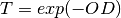

Light source¶
Contains the information to create an illumination source to be used by th PDD solver. It can use either a standard spectrum (default) or get a custom one as input. It includes utilities for changing the total irradiance or appliting a filter to the source.
The Illumination class¶
-
solcore.poisson_drift_diffusion.Illumination.Gauss(x, centre, hwhm)¶
-
class
solcore.poisson_drift_diffusion.Illumination.Illumination(spectrum='AM1.5d', irradiance=1, wavelengths=None, central_WL=532, width=10, power_density=1000, resolution=1)[source]¶ Creates the illumination spectrum in photons m-2 m-1, so it can be used by the drift diffusion module.
Parameters: - spectrum – Either a string with the name of the standard spectrum (AM1.5g, AM1.5d, AM0) or an array containing the power density (in W m-2 nm-1). Default: AM1.5d
- irradiance – A multiplicative factor of the spectrum. If the spectrum is in absolutine units, it represents the concentration factor. Default: 1.
- wavelengths – An array of the same length that spectrum and containing the corresponding wavelenghts (in m). If a standard spectrum is used, the photon flux is interpolated at these values. Default: None.
- central_WL – Central wavelength on an LED type illumination source, in nm.
- width – Half-width of the gaussian illumination profile in the LED type source, in nm.
- power_density – Power density in the LED type illumination profile, in W/m2.
- resolution – Resolution of the spectrum in the LED type illumination profile, in nm.
-
filter(edge=None, OD=2, material=None, thickness=0, T=293, func=None)[source]¶ Creates a filter to be applied to the spectrum.
It can be either a square, long pass filter, defined by an edge wavelength (edge) and an optical density (OD) or assuming a layer of certain thickness (thickness) made of certain solcore material (material). It can also be provided externally as a function (func) that calculates a wavelength dependent optical density.
The optical density is used to calculate the transmission of the filter as:

Parameters: - edge – Wavelength edge
- OD – Optcial density above the edge
- material – Solcore material
- thickness – Thickness of the solcore material
- T – Temperature
- func – Function that takes wavelengths as input and returns the optical density at those wavelengths
Returns: None
Example 1:
# We use the above methods to create several light sources often found in PV
import numpy as np
import solcore3.PDD as PDD
# If we only want access to this module, we could do:
# import solcore3.PDD.Illumination as Illu
# Spectrum for space PV: AM0, irradiance of 1 sun, unfiltered, default wavelength range given by the input file 'astm173.csv'.
MySpaceSun = PDD.Illumination( spectrum='AM0')
# Spectrum for flat solar panels: AM1.5g, irradiance of 1 sun, unfiltered, custom wavelength range
wl = np.linspace(400, 1300, 4)
MyFlatPanelSun = PDD.Illumination( spectrum='AM1.5g', wavelengths=wl)
# Spectrum for CPV: AM1.5d (default), irradiance of 500 sun, filtered by a layer with OD=3 and absorption edge at 800 nm,
# default wavelength range given by the input file 'astm173.csv'.
MyCPVPanelSun = PDD.Illumination( irradiance=500 )
MyCPVPanelSun.filter( edge=800e-9, OD=3 )
References¶
| [1] | Reference AM1.5 Spectra. NREL. http://rredc.nrel.gov/solar/spectra/am1.5/ |